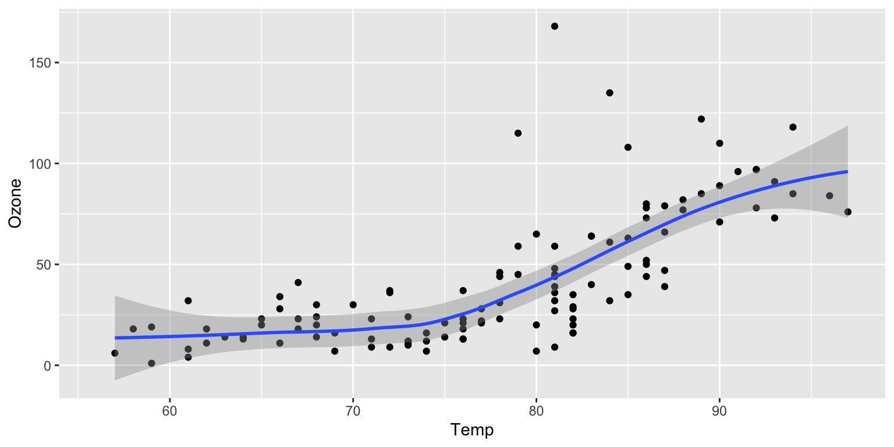

Code
library(reticulate)library(reticulate)For a demonstration of a line plot on a polar axis, see Figure 1.
import numpy as np
import matplotlib.pyplot as plt
# las siguientes dos líneas evitan warnings en la salida quarto
import warnings
warnings.filterwarnings('ignore')
r = np.arange(0, 2, 0.01)
theta = 2 * np.pi * r
fig, ax = plt.subplots(
subplot_kw = {'projection': 'polar'}
)
ax.plot(theta, r)
ax.set_rticks([0.5, 1, 1.5, 2])
ax.grid(True)
plt.show()No están usando objetos compartidos en este ejemplo, pero también se podrían hacer como en el ejemplo con R Markdown.
Quarto es muy parecido a R Markdown: Página oficial de Quarto
Figure 2 further explores the impact of temperature on ozone level.
library(ggplot2)
ggplot(airquality, aes(Temp, Ozone)) +
geom_point() +
geom_smooth(method = "loess"
)
Observable es una plataforma en línea para escribir y publicar cuadernos JavaScript. Observable funcionará con cualquier biblioteca de JavaScript que se ejecute en el navegador.
A continuación se muestra un sencillo ejemplo basado en el dataset de Allison Horst Palmer Penguins (pingüinos del archipiélago Palmer en Antártida). Se observa cómo la masa corporal del pingüino varía tanto por el sexo como por las especies (use las entradas proporcionadas para filtrar el conjunto de datos por longitud del pico e isla donde se encuentran):
viewof bill_length_min = Inputs.range(
[32, 50],
{value: 35, step: 1, label: "Bill length (min):"}
)
viewof islands = Inputs.checkbox(
["Torgersen", "Biscoe", "Dream"],
{ value: ["Torgersen", "Biscoe"],
label: "Islands:"
}
)Plot.rectY(filtered,
Plot.binX(
{y: "count"},
{x: "body_mass_g", fill: "species", thresholds: 20}
))
.plot({
facet: {
data: filtered,
x: "sex",
y: "species",
marginRight: 80
},
marks: [
Plot.frame(),
]
}
)Inputs.table(filtered)// data = FileAttachment("palmer-penguins.csv").csv({ typed: true })
data = FileAttachment("penguins.csv").csv({ typed: true })filtered = data.filter(function(penguin) {
return bill_length_min < penguin.bill_length_mm &&
islands.includes(penguin.island);
})